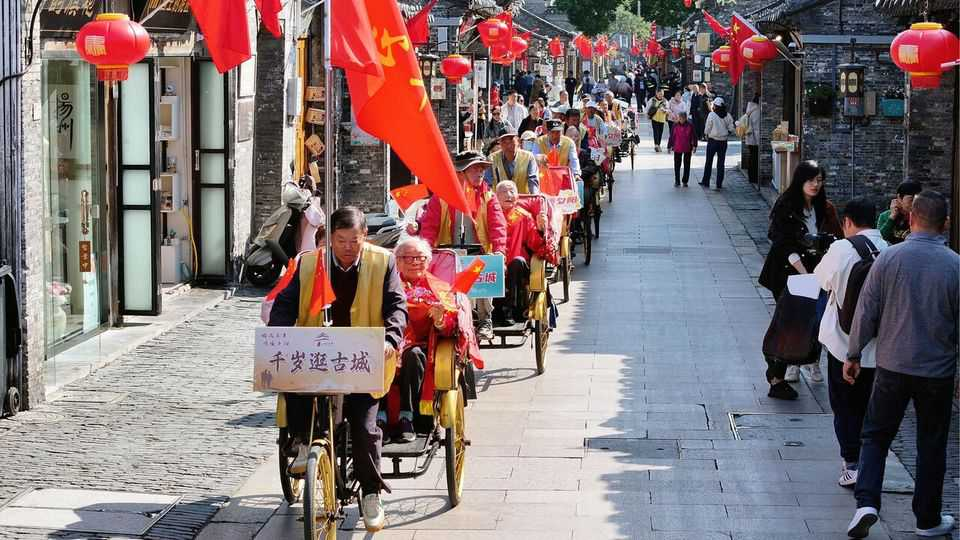

Asian governments are making children care for their parents
As populations age, the elderly are being neglected
June 25th 2026

In March lawmakers in Telangana, a state in southern India, passed a bill mandating that up to 15% of an adult offspring’s salary can be redirected into their parents’ bank accounts if they are found to be neglecting them. According to Revanth Reddy, Telangana’s chief minister, children who fail to care for their parents are “not qualified to live in society”.
Across Asia, the instinct to punish unfilial children—pioneered in 1995 by Singapore with its Maintenance of Parents Act—is spreading. Malaysia is pursuing filial obligation on two tracks: a secular Senior Citizens Bill protecting elders from abuse or abandonment, and sharia court amendments allowing Islamic courts to hear parental-maintenance claims. MPs in the Philippines have filed a Parents Welfare Act for the third time since 2016 to punish wrongdoers with up to ten years in prison.
These are the latest additions to a lengthening list. China has since 2013 required adult offspring to visit ageing parents “often”, on pain of fines or jail. In Shanghai those who defy court orders to provide for their parents are put on a credit blacklist. Many countries including South Korea, India and Japan set out legal protections for the elderly against abuse, including financial exploitation.
Globally, rates of elderly abuse and abandonment are rising as populations age. Malaysian authorities recorded 2,144 cases of elderly patients abandoned in hospitals between 2018 and 2022. The country of 36m people has only 18 licensed nursing homes and around 70 geriatricians. Asia’s governments, in short, have lost faith in filial love as social policy.
Asia is ageing faster than any region in recorded history, generally before its economies are rich enough to absorb the shock. Some 722m people, about 15% of Asia’s population, are over 60. By 2050 that share will reach 26%. A survey found that 49% of Thai millennials and 31% of Indonesian ones cited parental care as the main reason they could not leave the family home. The generation expected to fill this gap is itself stretched thin.

Filial piety in Asia has always carried an economic logic. Children were for a long time, as one Singaporean sociologist notes, “produced and raised as part of retirement planning”. Part of their wages flowed to parents so long as families lived together. Urbanisation has broken that compact, as young adults migrate to cities, establish separate households and have to cope with mortgages and child care. The competing claims on their income multiply, “yet the expectation of filial provision remains”, says Haslina Muhamad of Universiti Malaya in Kuala Lumpur.
Critics, however, say that instead of looking to punish those who fail, states should provide better infrastructure for the elderly, including day care, end-of-life facilities and welfare systems that give families options, not orders. China offers the starkest warning. When in 2013 its rulers required children to visit parents “often”, the backlash was instant. “The government should have thought of how they would address this problem when it brought in the one-child policy,” ran one widely shared social-media comment. ■
For exclusive coverage of Asian politics, economics and security, sign up to Asia Bulletin, our weekly subscriber-only newsletter.